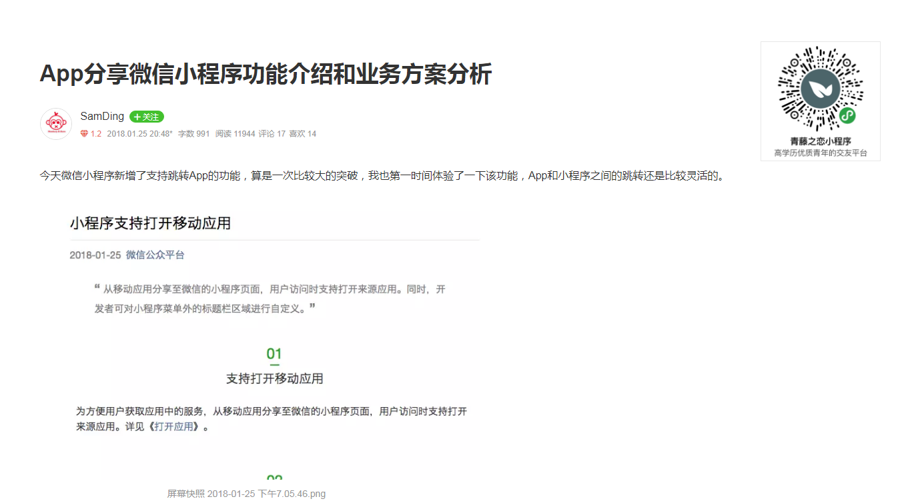

作为一个前端开发，平时难免要经常浏览一些博客、技术网站，学习新的技术或者寻找解决方案，可能更多是ctrl+c和ctrl+v（^_^|||），但是目前很多网站的布局以及广告对于我们阅读文章造成了很多的障碍，很是烦躁啊。于是才有了这篇文章，我们借助chrome的Tampermonkey插件来改造自己感兴趣的网址，让浏览内容更纯粹。
在我之前的随笔中已经对Tampermonkey 做了介绍，它是一个chrome插件，是一款免费的浏览器扩展和最为流行的用户脚本管理器。简单来说就是可以指定进入某些页面的时候调用指定的JS代码，这样我们就可以将页面中的某些元素删除，或者更改样式。
Tampermonkey的安装需要翻墙，网址是https://tampermonkey.net/。
下面是我常用的几个网站的处理代码：
CSDN
// ==UserScript==
// @name CSDN
// @namespace http://tampermonkey.net/
// @version 0.1
// @description try to take over the world!
// @author You
// @match https://blog.csdn.net/*/article/details/*
// @grant none
// ==/UserScript==
(function() {
'use strict';
$('aside').remove()
$('.recommend-right').remove()
$('.fourth_column').remove()
$('.pulllog-box').remove()
$('.indexSuperise').remove()
$('#btn-readmore').click();
$('main').css('width','auto')
// Your code here...
})();
原网页
处理后
简书
// ==UserScript==
// @name JianShu
// @namespace http://tampermonkey.net/
// @version 0.1
// @description try to take over the world!
// @author You
// @match https://www.jianshu.com/p/*
// @require https://cdn.bootcss.com/jquery/3.3.1/jquery.min.js
// @grant none
// ==/UserScript==
(function() {
'use strict';
var $navbar = document.querySelector('.navbar');
$navbar.style.display = 'none';
var $ads = document.querySelector('#web-note-ad-fixed');
$ads.style.display = 'none';
var $ele = document.querySelector('.note .post');
$ele.style.width = '1400px'
})();
原网页

处理后
掘金
// ==UserScript==
// @name JueJin-post
// @namespace http://tampermonkey.net/
// @version 0.1
// @description try to take over the world!
// @author You
// @match https://juejin.im/post/*
// @grant none
// ==/UserScript==
(function() {
'use strict';
var $container = null;
function findContainer(){
$container = document.querySelector('.main-container');
if(!$container){
setTimeout(function(){
findContainer();
},500)
}else {
$container.style.maxWidth = '1100px';
var $article = document.querySelector('.article-area');
$article.style.width = '100%'
}
}
var $sidebar = null;
function findSidebar(){
$sidebar = document.querySelector('.sidebar');
console.log($sidebar)
if(!$sidebar){
setTimeout(function(){
findSidebar();
},500)
}else {
$sidebar.style.display= 'none';
}
}
setTimeout(function(){
findContainer();
findSidebar()
},1000)
})();
原网页
处理后
只要会一点前端开发技术，你就可以随意改造你想看到的网站的内容了，是不是感觉一下子清爽了很多，发挥你的创意吧